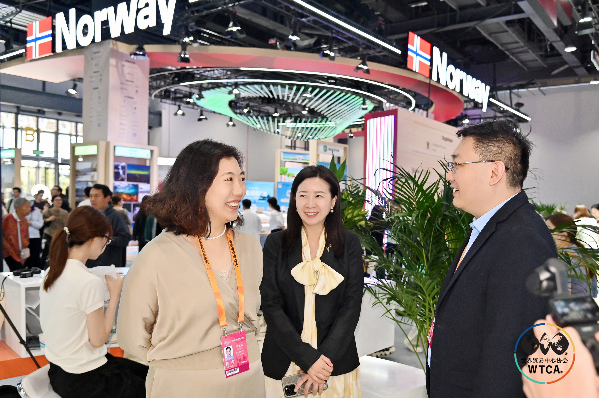
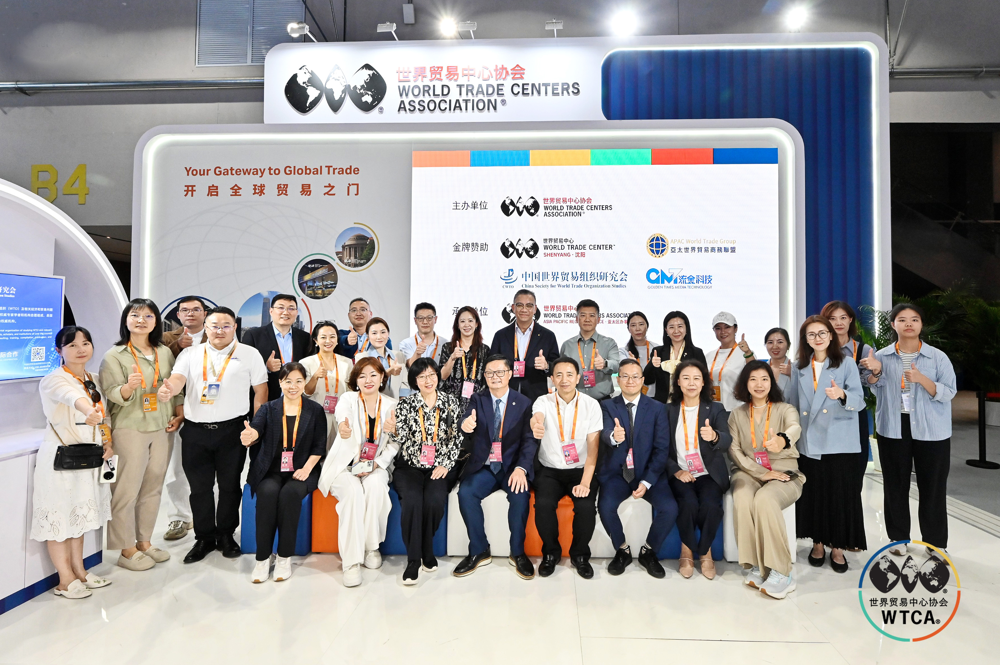
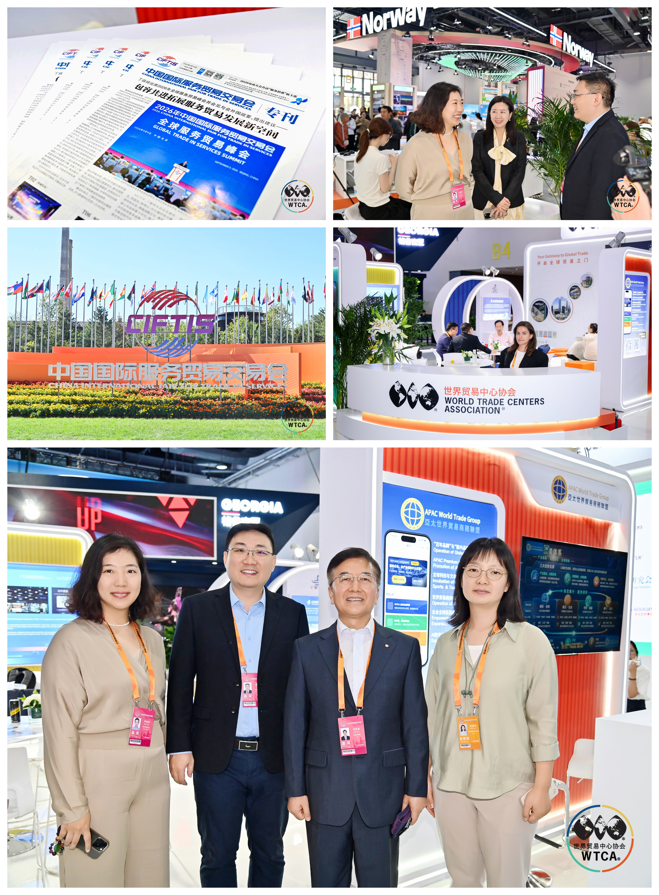

Summary: At the WTCA pavilion during CIFTIS 2026, I met Yin Jinrui and Zheng Tingting from Nanning, together with Li Mingxing, WTCA Global Director and President of the Asia-Pacific World Trade Business Alliance. The conversation was relaxed and practical, and it kept returning to a single question: how the world's network of World Trade Centers can work in concert.

During CIFTIS, the WTCA's dedicated pavilion is where World Trade Center partners from around the world tend to meet. This time, Yin Jinrui, President of WTC Nanning, and Zheng Tingting of Nanning Shimao Center travelled to Beijing and met the WTC Singapore team at the pavilion. Li Mingxing, WTCA Global Director and President of the Asia-Pacific World Trade Business Alliance, joined the conversation.
I. No agenda — the subject was the network itself
There was no fixed agenda and no press-release-style announcement. What we talked about was the network itself: how a city's World Trade Center finds its place on the WTCA global map, and how it can draw on a hub node like Singapore.
Li Mingxing spoke from the perspective of the Asia-Pacific World Trade Business Alliance. Regional WTC networks, he said, are moving from “each city running its own events” toward “cities sharing one network.” Nanning connects China with ASEAN; Singapore connects Southeast Asia with the world. Between the two nodes, complementary interfaces exist naturally.

II. A convener's view: turning a chance encounter into a lasting connection
I added a point from where I sit as convener: the value of WTC ONE Club is not one more meeting, but making sure that something actually connects after the meeting — turning a chance encounter at a pavilion into sustained cross-city cooperation. Nanning's local resources, combined with Singapore's role as a transit point and global interface, are exactly where such connections begin most naturally.
Exhibitions end. But once a node in a network is connected, it does not disconnect. This pavilion meeting was another small footnote in turning “global network” from a noun into a verb.


About the World Trade Centers Association
The World Trade Centers Association (WTCA), founded in 1970, is a non-profit, non-political organization dedicated to establishing and operating World Trade Centers worldwide to promote regional economic development and international trade and investment. Headquartered in New York, its global network spans nearly 100 countries and territories with over 300 World Trade Centers, serving thousands of member companies and clients by helping them source, find customers and improve financing and investment access.
About World Trade Center Singapore (WTC Singapore)
World Trade Center Singapore is the WTCA's officially authorized member in Singapore. Through three business pillars — WTC ONE Club, GlobalX and WTC Fund — it connects global capital, innovation resources and market opportunities, providing enterprises with cross-border matchmaking and globalization support.